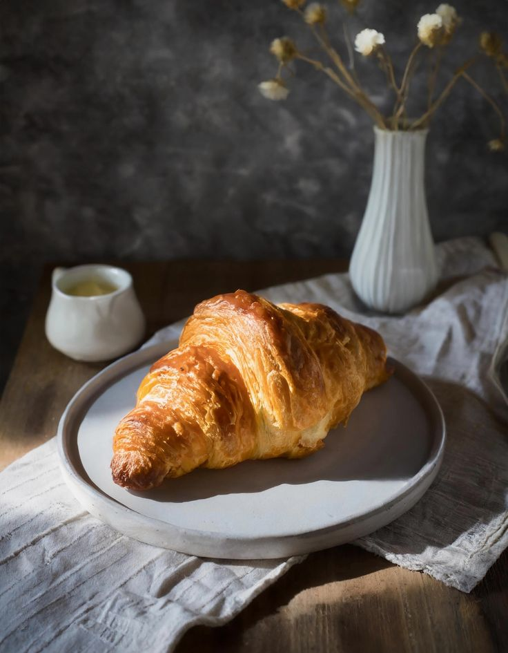
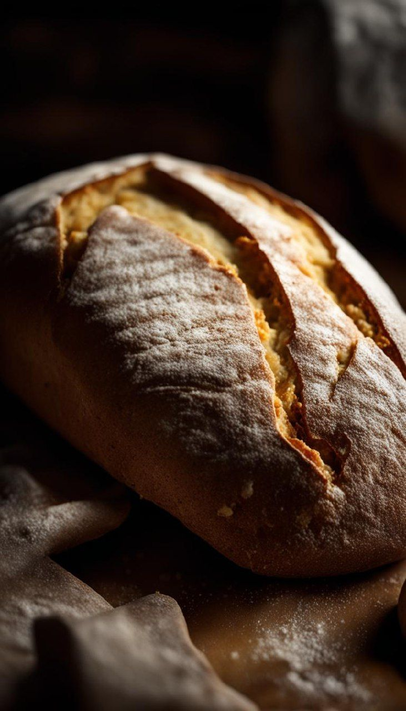
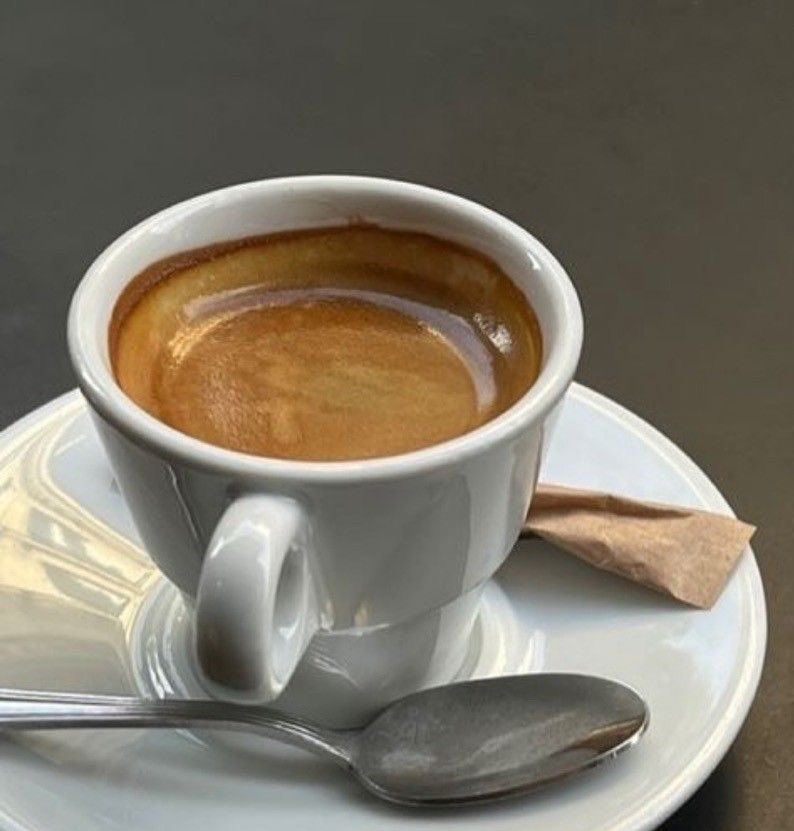
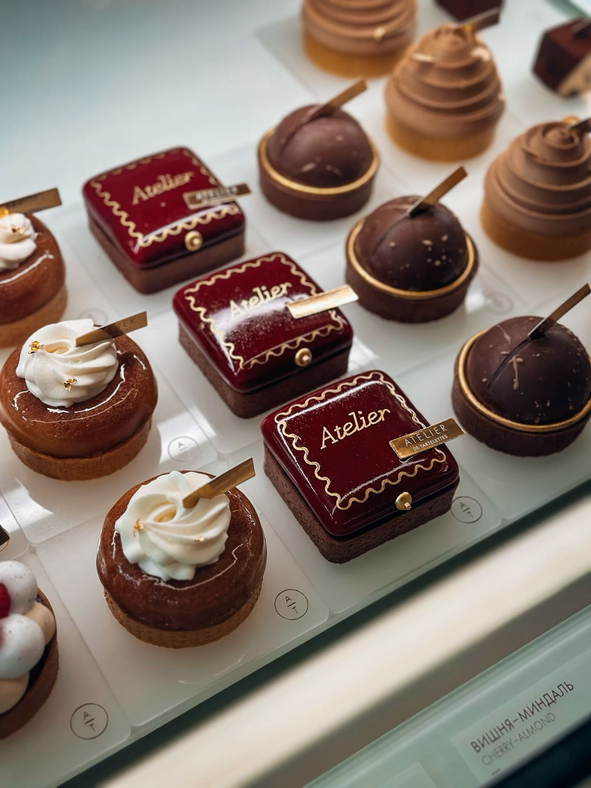

Круассаны
Хрустящие снаружи, воздушные внутри.
Небольшое место у метро «Рижская», где каждое утро пахнет свежей выпечкой, а кофе готовят без спешки.
Посмотреть меню →ул. Сущёвский Вал · Москва

Мы печём небольшими партиями, чтобы на витрине оставались только свежие булочки, хлеб и десерты.

Хрустящие снаружи, воздушные внутри.

Эспрессо, фильтр и молочные классики.

Нежные торты и сезонные сладости.

Без лишнего пафоса. Хорошие продукты, спокойный интерьер, дружелюбные люди и запах выпечки, который встречает вас у двери.